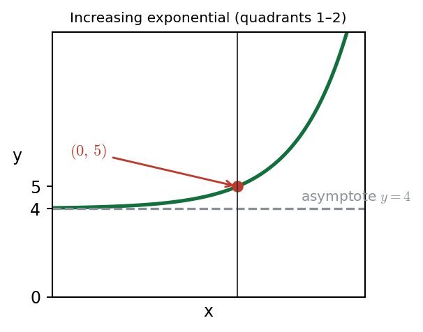
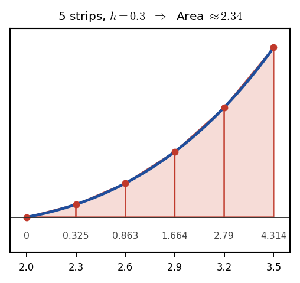

Harry → Phuc • 10 July 2026 tutorial
P2 WMA12/01 — May 2024 — Q6Q6 · Curve sketch and trapezium rule (deferred)
Deferred — left blank by Phuc in the exam. Harry asked Phuc to revisit Q6 and email back for a final score. The method below is mark-scheme reference only, not lesson evidence.

Sketch of \(y=a^{x}+4\) for \(a>1\): increasing exponential with \(y\)-intercept \((0,5)\) and horizontal asymptote \(y=4\).
Part (a) · Sketch \(y=a^{x}+4\)[3] · deferred (MS reference)
Hide workingStrategy
\(a^{x}\) is an increasing exponential for \(a>1\). Adding 4 shifts it up by 4. Find the \(y\)-intercept by setting \(x=0\); the asymptote is the shifted horizontal asymptote of \(a^{x}\).
Working · intercept
\(x=0:\; y=a^{0}+4=1+4=5\). So the \(y\)-intercept is \((0,5)\).
Working · asymptote
As \(x\to-\infty\), \(a^{x}\to 0\), so \(y\to 4\). The horizontal asymptote is \(y=4\).
Result
Increasing curve in quadrants 1–2; \(y\)-intercept \((0,5)\); asymptote \(y=4\).
Sense check
The curve approaches \(y=4\) from above as \(x\to-\infty\) (since \(a^{x}>0\)), and grows without bound as \(x\to+\infty\).

Trapezium rule with \(h=0.3\) over \(x=2\) to \(3.5\). Tabulated \(y\)-values: 0, 0.3246, 0.8629, 1.6643, 2.7896, 4.3137.
Part (b) · Trapezium rule estimate[3] · deferred (MS reference)
Carry-in\(h=0.3\) (strip width); \(y\)-values: 0, 0.3246, 0.8629, 1.6643, 2.7896, 4.3137. Use the trapezium rule with all tabulated values.
Hide workingFormula · trapezium rule
\[ \int\approx\frac{h}{2}\big[y_{0}+y_{n}+2(y_{1}+y_{2}+\cdots+y_{n-1})\big] \]
Substitute
\[ \frac{0.3}{2}\big[0+4.3137+2(0.3246+0.8629+1.6643+2.7896)\big] \]
Working
\[ =0.15\big[4.3137+2(5.6414)\big]=0.15\big[4.3137+11.2828\big]=0.15\times15.5965 \]
Result
\( \approx 2.34 \) (to 2 d.p.)
Sense check
The mark scheme notes the calculator value for this integral is \(\approx 2.30\); the trapezium estimate \(2.34\) is slightly larger because the curve is convex (concave up) on this interval.
Part (c)(i) · Estimate \(\int_{2}^{3.5}(2^{x}+2x)\,dx\)[part of 3] · deferred (MS reference)
Carry-inFrom (b): \(\int_{2}^{3.5}(2^{x}-2x)\,dx\approx 2.34\).
Hide workingStrategy (MS reference)
Write the integrand in terms of the part (b) function: \(2^{x}+2x=(2^{x}-2x)+4x\). The first piece is exactly part (b); the second is a standard integral.
Formula · split the integral
\[ \int_{2}^{3.5}\!(2^{x}+2x)\,dx=\int_{2}^{3.5}\!(2^{x}-2x)\,dx+\int_{2}^{3.5}\!4x\,dx \]
Working · evaluate each piece
First piece \(=2.34\) (part (b)). Second piece: \[ \int_{2}^{3.5}\!4x\,dx=\Big[2x^{2}\Big]_{2}^{3.5}=2(3.5)^{2}-2(2)^{2}=24.5-8=16.5 \]
Working · add
\[ 2.34+16.5=18.84 \]
Result
\( \approx 18.84 \)
Sense check
The estimate carries through the part (b) value, so the MS follows through on the student's own answer to (b). MS answer: \(18.84\).
Part (c)(ii) · Estimate \(\int_{2}^{3.5}(2^{x+1}-4x)\,dx\)[part of 3] · deferred (MS reference)
Carry-inFrom (b): \(\int_{2}^{3.5}(2^{x}-2x)\,dx\approx 2.34\).
Hide workingStrategy
Factor: \(2^{x+1}-4x=2\cdot 2^{x}-4x=2(2^{x}-2x)\). So the integral is \(2\times\) the answer to part (b).
Working
\[ \int_{2}^{3.5}(2^{x+1}-4x)\,dx=2\int_{2}^{3.5}(2^{x}-2x)\,dx=2\times 2.34 \]
Sense check
This is a clean factor-out: \(2^{x+1}=2\cdot 2^{x}\) and \(4x=2\cdot 2x\).